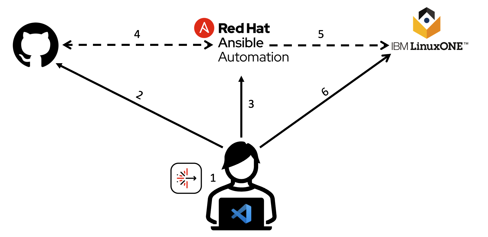
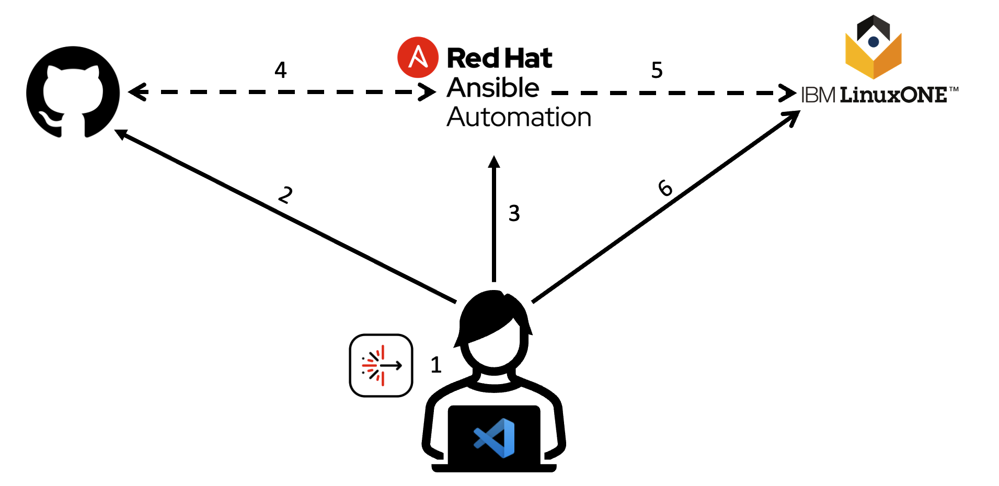

Hello, world! Welcome to the demo website.
This is a simple demonstration website built to showcase the capabilities of Ansible Lightspeed with IBM watsonx Code Assistant.
This is a simple demonstration website built to showcase the capabilities of Ansible Lightspeed with IBM watsonx Code Assistant.
